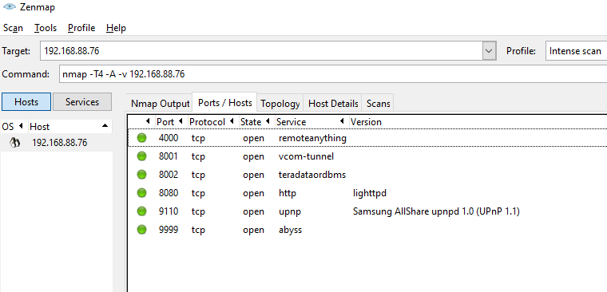
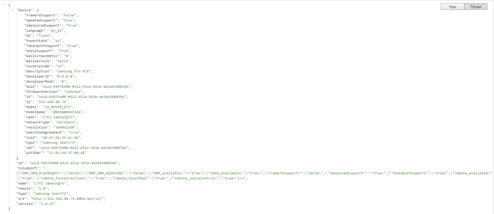
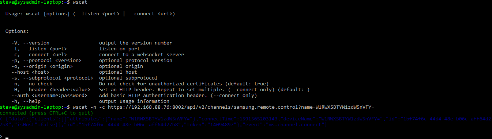

S. Andrews
GitHub Static Page: https://stanleysteveandrews.github.io/
GitHub: https://github.com/stanleysteveandrews
Vanity Domain (S3 Static): stanleysteveandrews.net
LinkedIn Profile: www.linkedin.com/in/stanleysteveandrews
I am an outgoing and energetic professional, seeking a career that fits my professional skills, and personality. This page highlights recent activities, thoughts, and notes.
- June 28th 2020
-
AWS Honeycode
I spent some time today looking into and learning about Amazon Honeycode, a new no-code solution that is in beta. It looks to be a simple solution for in-house app creation and sharing for teams. The 'app' created in Honeycode can run on mobile devices by way of the Honeycode Player (iOS & Android). I loaded up a test .csv export from a MySQL DB table that contains customer contact information into a Honeycode table and played around with the interface for a bit. I think it's pretty slick all around, but cannot currently think of a use case in my current environment. But, this is after all the Beta so new features may change that.
Amazon Honeycode Introduction - June 25th 2020
-
AWS Lightsail Monitoring
I sat in on an online tech talk regarding AWS Lightsail monitoring, 'Best Practices for Monitoring and Troubleshooting System Performance with Amazon Lightsail'. There was quit a bit of good information including examples of burstable cpu limits, horizontal vs vertical scaling, and comparison with AWS Cloudwatch.
- June 18th 2020
-
Eventbrite API
I've been looking at the Eventbrite API for the last couple of days due to a request from my colleagues to have a readily available list of attendees for upcoming sessions. This is mostly a result of the need to confirm board meeting quorums. Looking at Eventbrite's API documentation, it's pretty easy to pull data in a number of ways so I went with a PHP implementation. I'm first retrieving a list of active upcoming events, then feeding the event ID via POST to a page with this code:
$ch = curl_init(); $e_id=$_REQUEST['event_id']; echo "Event ID: "; echo $e_id; curl_setopt($ch, CURLOPT_URL, "https://www.eventbriteapi.com/v3/events/".$e_id."/attendees/"); curl_setopt($ch, CURLOPT_RETURNTRANSFER, TRUE); curl_setopt($ch, CURLOPT_HEADER, FALSE); curl_setopt($ch, CURLOPT_HTTPHEADER, array( "Authorization: Bearer YOUR_API_TOKEN_HERE" )); $response = curl_exec($ch); curl_close($ch);Next up, I need to decode the returned JSON into an array and echo out the names:
$result = json_decode($response, true); // decode the JSON feed foreach($result['attendees'] as $elem) { echo $elem['profile']['name'];It took me a bit to wrap my head around the JSON structure as it's a nested array, but once I got that sorted I was good to go.
- June 14th 2020
-
ICSI CNSS
I just finished the ICSI Certified Network Security Specialist online training that is being offered free of charge during the COVID19 pandemic. It took me a few days to do, just a bit of time here and there. If I had an intern or new hire with limited exposure to I.T. security, this would be a great mini-training for them to do.
Verified Certificate of Completion.As for the company offering this, ICSI’s core programmes have earned accreditation from CREST and NCSC and their courses are accredited by the University of Central Lancashire. I wouldn't put much weight behind the 'certification' bit, but it's a good introduction / refresher for basic I.T. security.
- June 12th 2020
-
OWASP ZAP, TLS Failures
I did a quick guided project on Coursera today on OWASP ZAP. It's pretty cool and useful tool for site vulnerability assessments. Verification Link
We had a notification script failing on several servers today. Turns out Windows PowerShell uses .NET Framework 4.5, which does not include TLS 1.2 as an available protocol (at least on our PS version running on Server 2012R2 & 2016). Two options to fix according to MS:
1. Modify the script in question to include the following: [System.Net.ServicePointManager]::SecurityProtocol = [System.Net.SecurityProtocolType]::Tls12; 2. Add a system-wide registry key (e.g. via group policy) to any machine that needs to make TLS 1.2 connections from a .NET app. This will cause .NET to use the "System Default" TLS versions which adds TLS 1.2 as an available protocol AND it will allow the scripts to use future TLS Versions when the OS supports them. (e.g. TLS 1.3) reg add HKLM\SOFTWARE\Microsoft\.NETFramework\v4.0.30319 /v SystemDefaultTlsVersions /t REG_DWORD /d 1 /f /reg:64 reg add HKLM\SOFTWARE\Microsoft\.NETFramework\v4.0.30319 /v SystemDefaultTlsVersions /t REG_DWORD /d 1 /f /reg:32 - June 11th 2020
-
MSI Certifications
I had a bit of time today to look into a couple of online certification courses from the Management and Strategy Institute. Specifically, I took two free offerings on Project Management and Lean Six Sigma. These were both introduction type courses that only took about a half hour each, but I thought the layout was very good. I've been curious about Six Sigma and the information provided was helpful in gaining a better albeit general understanding. Both courses offered a certification exam (online, 15 questions) and an option to have the results registered in their database for verification. What is the value of these certifications? Probably not much. LinkedIn profile fluff for me, but not something I'd list on my resume. Still, they were fun and I learned something along the way.
Lean Six Sigma White Belt Certified (LSSWB)™
Project Management Essentials Certified (PMEC)™ - June 7th 2020
-
Samsung SmartTV
Earlier this year I purchased a new 4K tv to replace an older TCL 55" that was acting up. I went with a Samsung QLED 65", specifically model QN65Q80RAFXZA. As I had hacked around with the TCL and it's Roku interface enough to figure out it's web interface and API, I figured I'd look into what the Samsung TV has to offer.
First up was a bit of Googling followed by an NMAP (Zenmap) scan of the device. This was first attempted while it was powered off with no success (unlike the TCL / Roku). After powering on and re-scanning, I got results:
Next, I tried accessing each port in a web browser. Not much luck with that, so back to Google where I found an api URL: http://192.168.88.76:8001/api/v2/. This yielded:
Next I found some info on using cURL to GET and POST to URLs like:
curl -X POST -i 'http://192.168.88.76:8001/api/v2/applications/MCmYXNxgcu.DisneyPlus' (opens)
curl -X DELETE -i 'http://192.168.88.76:8001/api/v2/applications/MCmYXNxgcu.DisneyPlus' (closes)
curl -X POST -i 'http://192.168.88.76:8001/api/v2/applications/3201512006785' (Amazon Prime)
curl -X POST -i 'http://192.168.88.76:8001/api/v2/applications/111012010001' (Vudu)
curl -X POST -i 'http://192.168.88.76:8001/api/v2/applications/11101200001' (Netflix)
A little more Google-Fu and I discovered discussions on using wscat to connect to via websockets and sending commands. I have Ubuntu WSL installed, so a quick sudo apt install node-ws and I'm ready to go.
First out of the gate is converting the TV name (found when viewing http://
:8001/api/v2/) to base64 (I used https://www.base64encode.org/). Next is getting an access token by issuing the command
wscat -n -c https://192.168.88.76:8002/api/v2/channels/samsung.remote.control?name=W1RWXSBTYW1zdW5nVFY=
Notice the "?name=" bit. Use the base64 encoded name after that (mine was W1RWXSBTYW1zdW5nVFY=). This should trigger a message on the TV to "Allow". Use the remote to click allow, and a response including an access token will follow on the command line followed by a prompt where commands can be entered. From here on, connecting can be done with the token in the form of
wscat -n -c https://:8002/api/v2/channels/samsung.remote.control?token=<8 digit token> Now with the web socket prompt, I can:
list installed apps and their IDs
{"method":"ms.channel.emit","params":{"event": "ed.installedApp.get", "to":"host"}}
launch Netflix
{"method": "ms.channel.emit","params": {"event": "ed.apps.launch","to": "host","data": {"appId": "11101200001","action_type": "DEEP_LINK"}}}
launch a web browser
{"method":"ms.channel.emit","params":{"event": "ed.apps.launch", "to":"host", "data":{"appId":"org.tizen.browser","action_type":"NATIVE_LAUNCH","metaTag":"http:\/\/hackaday.com"}}}
(Note: anything with "app_type": 2 uses DEEP_LINK and "app_type": 4 is NATIVE_LAUNCH.)Taking things a step further, any of the commands that a remote would send can be sent using this methid as well. A list of key commands can be found here:
https://github.com/jaruba/ha-samsungtv-tizen/blob/a644f2db4ba74865ac9b8a12425825aa8a3c3efd/Key_codes.md
The commands would look like:
{"params": {"Cmd": "Click", "Option": "false", "TypeOfRemote": "SendRemoteKey", "DataOfCmd": "KEY_VOLUP"}, "method": "ms.remote.control"}
{"params": {"Cmd": "Click", "Option": "false", "TypeOfRemote": "SendRemoteKey", "DataOfCmd": "KEY_VOLDOWN"}, "method": "ms.remote.control"}
{"params": {"Cmd": "Click", "Option": "false", "TypeOfRemote": "SendRemoteKey", "DataOfCmd": "KEY_INFO"}, "method": "ms.remote.control"}
- June 2nd 2020
-
AWS API Change Tracker
Amazon announced the addition of source IP filtering for LightSail instance firewalls on May 7th, but I hadn't had time to look for CLI / API documentation updates until today. It was really frustrating that all of the announcement and documentation pages referenced only the GUI controls. I ran across this site which tracks changes to AWS API: https://awsapichanges.info/. Pretty handy!
- May 16th 2020
-
AWS Cloudfront & ACM
The inital setup with using S3 to host static files works fine, but it only serves HTTP. I thought I might use AWS ACM (Certificate Manager) to issue a certificate, then use AWS Cloudfront to implement it.
BE SURE TO CHANGE THE REGION TO 'US East (N. Virginia)us-east-1' BEFORE PROCEEDING !!! (ask me how I know)
Within ACM I requested a certificate for *.stanleysteveandrews.net and an additional name of stanleysteveandrews.net and selected DNS verification. In NameCheap, the trailing domain name needs to be stripped from the Host value (see https://stackoverflow.com/questions/51198472/cname-entry-not-working-on-namecheap-using-amazon-certificate-manager). It may take a bit to propogate, and if need be, there are good instructions on troubleshooting the verification here: https://aws.amazon.com/premiumsupport/knowledge-center/acm-certificate-pending-validation/
Next up is the CloudFront setup:
- Select the S3 bucket as the origin
- I chose redirect HTTP to HTTPS
- Choose the custom certificate generated eariler in ACM
- Added stanleysteveandrews.net as Alternate CNAME / Domain Name
- Wait for Cloud Formation to spin up and grab the endpoint URL (ex. a1b2c3d4e5f6g7.cloudfront.net)
- Change my NameCheap redirect to point at the CloudFront endpoint URL
- I added in a www. redirect as well
And that's about it. Now we're serving up HTTPS via Amazon's CDN from an S3 bucket that automatically updates from my Github page which I edit with NotePad++ on Windows and push changes via GIT BASH CLI. Awesome.
- May 16th 2020
-
AWS Code Pipeline
Hooked up my personal GitHub.IO page (this page) with AWS S3 static using AWS Code Pipeline. I also needed to set up the GitHub IO page on my persoanl account, which required adding my personal GitHub credentials into Win10 to differentiate between work & personal accounts. I figured using a new domain name would be a good idea as well, so I purchased my vanity .net and .com domains through NameCheap and set redirection to the S3 bucket. I'd like to look into AWS Amplify next to see how it compares to what I have done with Code Pipeline.
- May 13th 2020
-
AWS Summit Online
Attended in the following sessions in addition to Werner Vogel's opening keynote address:
- Introduction to AWS security (Level 100) - US
- AWS networking fundamentals (Level 200) - US
- What's new in AWS file storage (Level 300) - US
- Move your desktops and applications to AWS end-user computing (Level 200) - US
- Building serverless applications with AWS Amplify (Level 400) - US
- April 3rd 2020
-
3CX Intermediate and Advanced Certifications
Studied for and passed 3CX certification exams for
- April 2nd 2020
-
3CX Basic Certification
Studied for and passed exam for 3CX Basic Certified Engineer v16
{kind=link}
{kind=link}
{kind=link}